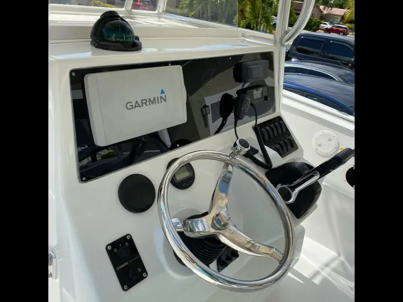

Resumen tecnico
En Cartagena y el Caribe colombiano, el mantenimiento de casco tiene impacto directo en consumo de combustible, velocidad, seguridad y vida util de la pintura antifouling. Este articulo responde de forma practica a la consulta principal: frecuencia limpieza casco charter.
Recomendaciones accionables
- Programar inspeccion visual y limpieza submarina preventiva.
- Monitorear helice, anodos y zonas de mayor arrastre.
- Evitar esperar a fouling severo para no acelerar costos de varada.
- Documentar con reporte fotografico cada servicio realizado.
Enlaces recomendados
- Servicio de Limpieza de Casco en Agua
- Cobertura local en Marina Manzanillo
- Calendario SEO 2026 completo
Articulos relacionados
Cotiza tu limpieza de casco
Atendemos yates, veleros y catamaranes con buzos certificados. Tarifa base: $20.000 COP por pie.
Cotizar por WhatsApp